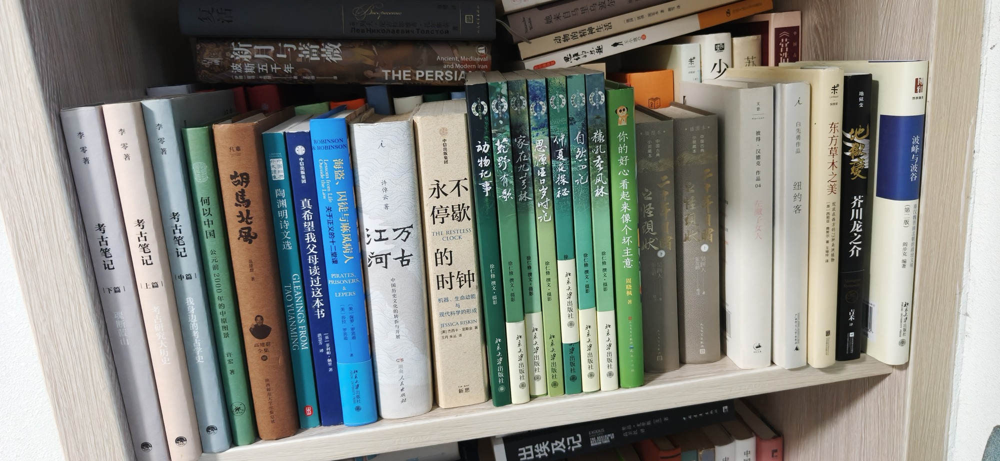

南房东第三层外

- 考古笔记：魂断蓝山（上篇、中篇、下篇） 李零著
- 何以中国：公元前2000年的中原图景 许宏
- 胡马北风 高建群 全集 陕西师范大学出版社
- 陶渊明诗文选 TAO YUANMING GLEANINGS FROM
- 真希望我父母读过这本书 英 菲利帕·佩里 洪丝芳译 中信出版集团
- 海盗、囚徒与麻风病人 Outside the Law （美）保罗·罗宾逊 （美）莎拉·罗宾逊 北京大学出版社
- 永不停歇的时钟 THE RESTLESS CLOCK [美]杰西卡·里斯金著 王丹朱丛译
- 许倬云著 万古江河 中国历史文化的转折与开展 湖南人民出版社
- 动物记事 徐仁修撰文·摄影 北京大学出版社
- 荒野有歌 徐仁修撰文·摄影 北京大学出版社
- 家在九芎林 徐仁修撰文·摄影 北京大学出版社
- 思源垭口岁时记 徐仁修撰文·摄影 北京大学出版社
- 仲夏夜探秘 徐仁修撰文·摄影 北京大学出版社
- 自然四记 徐仁修撰文·摄影 北京大学出版社
- 猿吼季风林 徐仁修撰文·摄影 北京大学出版社
- 你的好心看起来像个坏主意 周晓棋
- 二十年之怪现状 小说藏本 中国 福 8810E 二十年一月
- 彼得·汉德克作品04 左撇子女人 Horissn
- 白先勇作品 纽约客
- 东方草木之美：绽放在西方的73种亚洲植物
- 地狱变 芥川龙之介
- 波峰与波谷（第二版） 阎步克 编著 秦汉魏晋南北朝的政治文明
共 22 本书，上传于 2026-10-03 08:16:54。